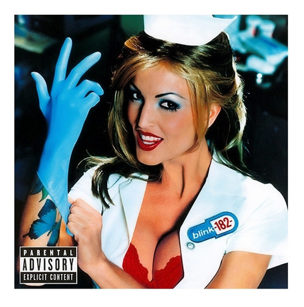

Blink-182
Producido por Jerry Finn, lanzado al mercado en noviembre del 2003 mediante Geffen Records
Take Off Your Pants and Jacket
Lanzado el 12 de junio del 2001. En este álbum trabajaron con el factor somos adolescentes
California
Lanzado el 1 de julio de 2016, por los sellos discográficos BMG. Es el primer álbum de la banda con el vocalista/guitarrista Matt Skiba

Enema of the State
Lanzado el 1 de junio de 1999. Primera aparición del gran baterista Travis Barker
Dude Ranch
Grabado en Big Fish Studios, Encinitas, California y contó con la producción de Mark Trombino. Publicado el 17 de junio de 1997
Cheshire
Lanzado el 17 de febrero de 1995. Considerado el primer disco de pop-punk de la historia. Con este álbum logran hacerse un nombre